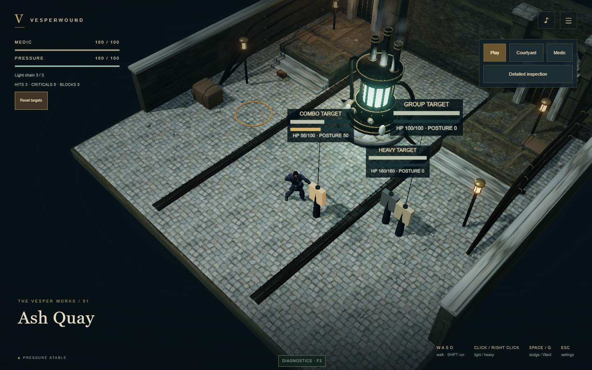
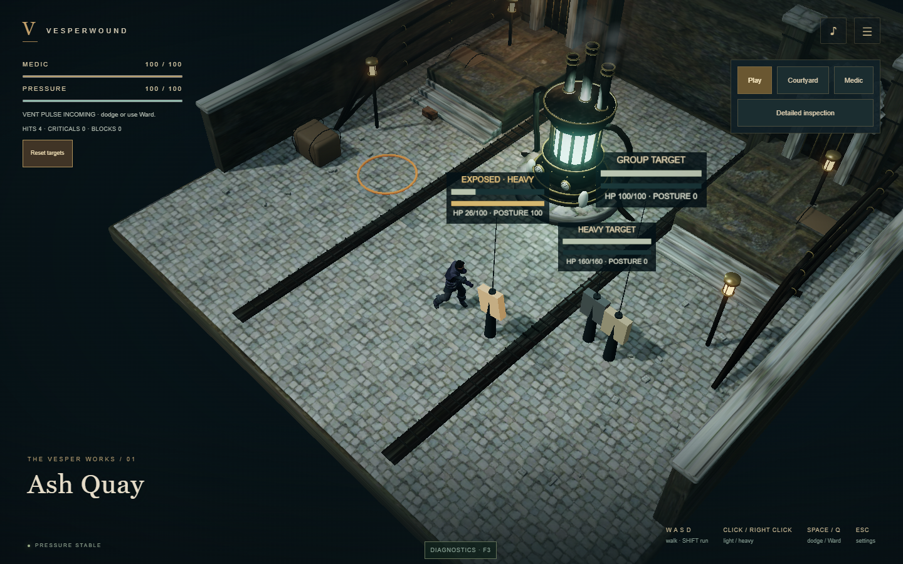
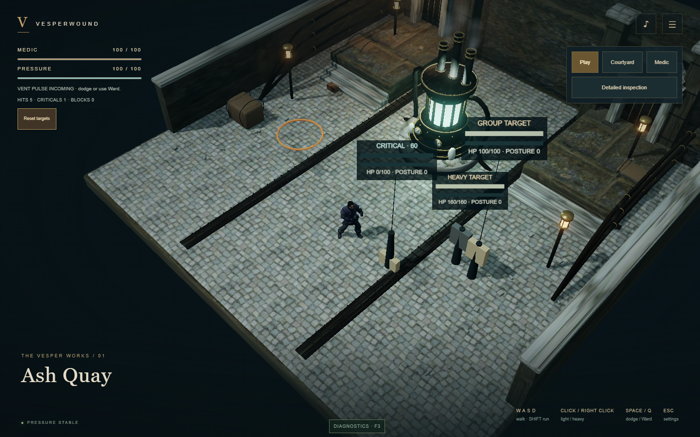
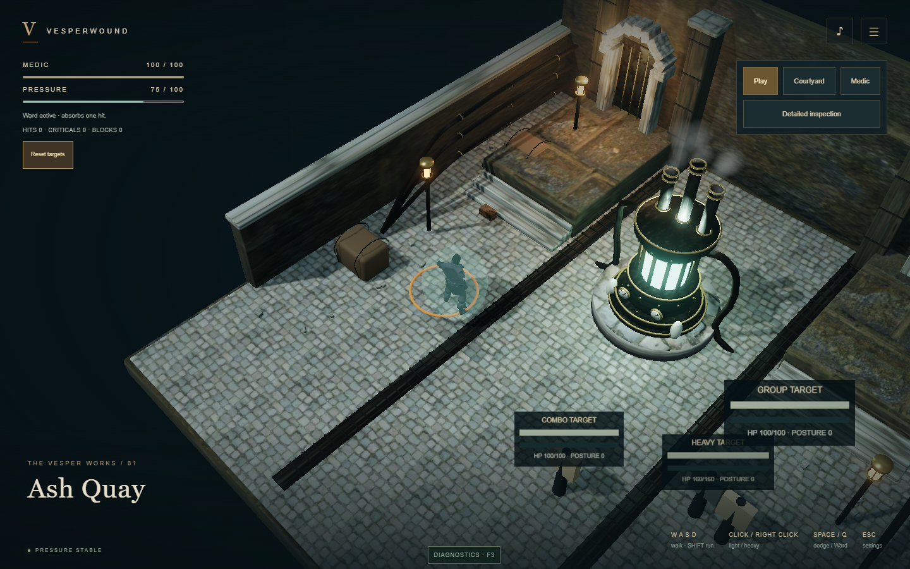
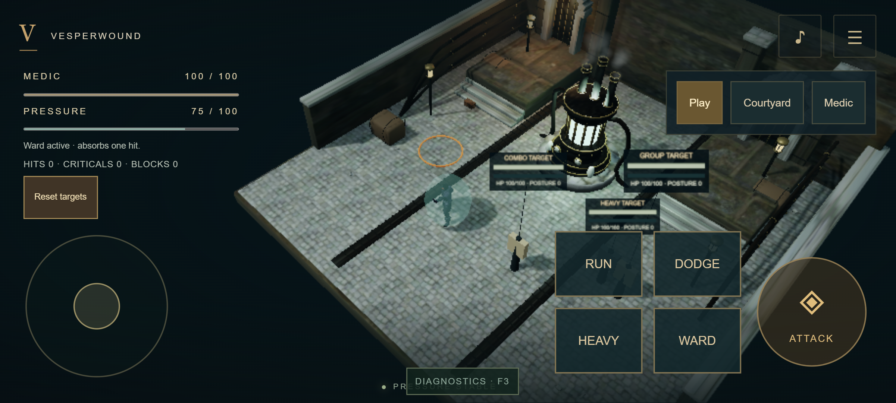
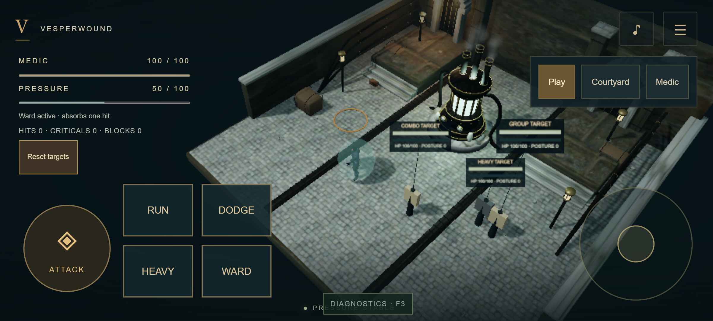
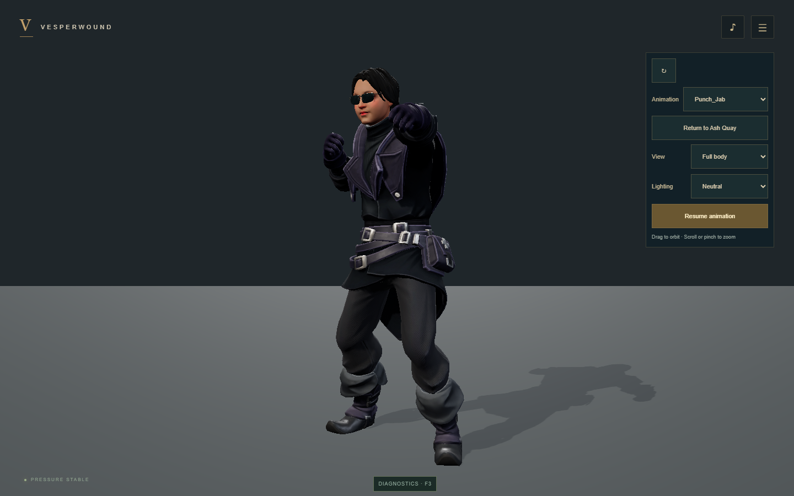
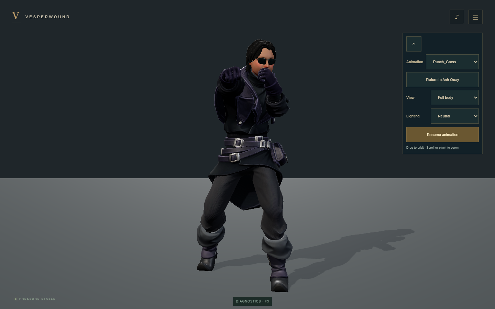
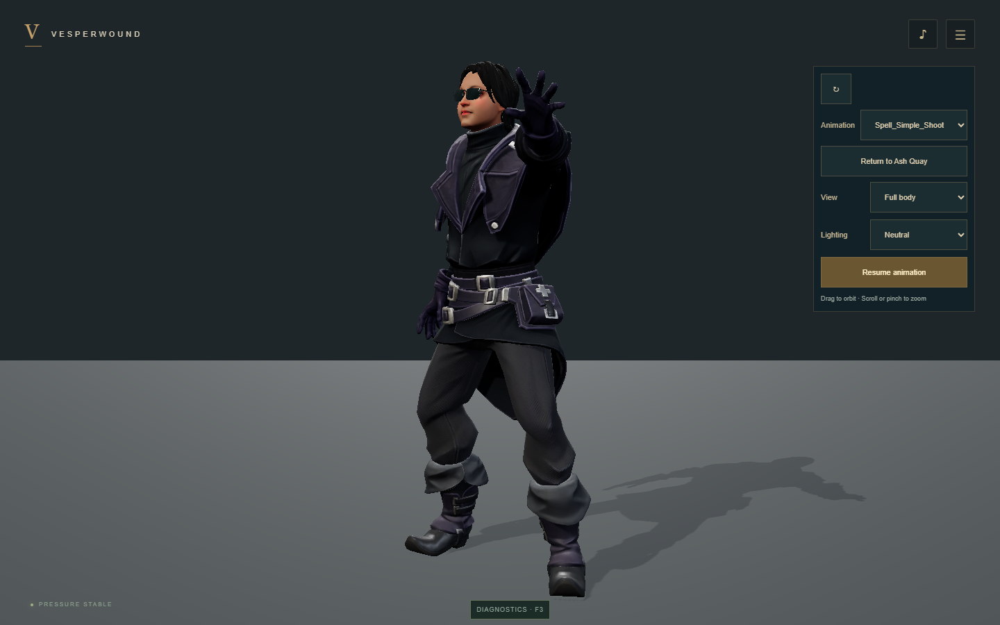

Medic — Phase 3 unarmed combat
Actual browser captures from Ash Quay. Use left click for jab/cross/jab, right click for heavy, Space for dodge and Q for Ward. Reach 100 posture, then land heavy during the two-second exposure for a deliberate critical. Validation report.
Combat demonstration
Recorded browser input demonstrates the combo, heavy stagger and critical defeat, target reset, then identical outcomes on Low quality with Reduced Motion enabled. These screen recordings have no captured audio; synthesized combat sounds are available in the running game.
WebGPU · desktop · High followed by Low/Reduced Motion.
WebGL2 · desktop · same deterministic combat outcomes.
Combat feedback

Jab/cross/jab: 44 health and 50 posture damage.

Heavy adds 30 health and 50 posture damage. EXPOSED invites a critical follow-up.

Critical heavy: 60 health damage, opening consumed and visible defeat.

Ward protects Medic from one pressure-vent pulse.
Touch controls

915 × 412 CSS pixels, controls at 1.4× scale.

Separate Heavy/Ward buttons; movement remains independently owned.
Licensed animation additions

Punch_Jab · Quaternius CC0 addition to the saved animation master.

Punch_Cross · reused for light cross and the retimed heavy strike.

Spell_Simple_Shoot · Ward gesture, no equipment changes.
Medic remains Tony Flanagan’s accepted SciFi Medic under CC BY 4.0. The separate Quaternius animation library is CC0. Physical-phone testing and human combat-feel review remain separate gates. No Phase 4 enemy AI is included.